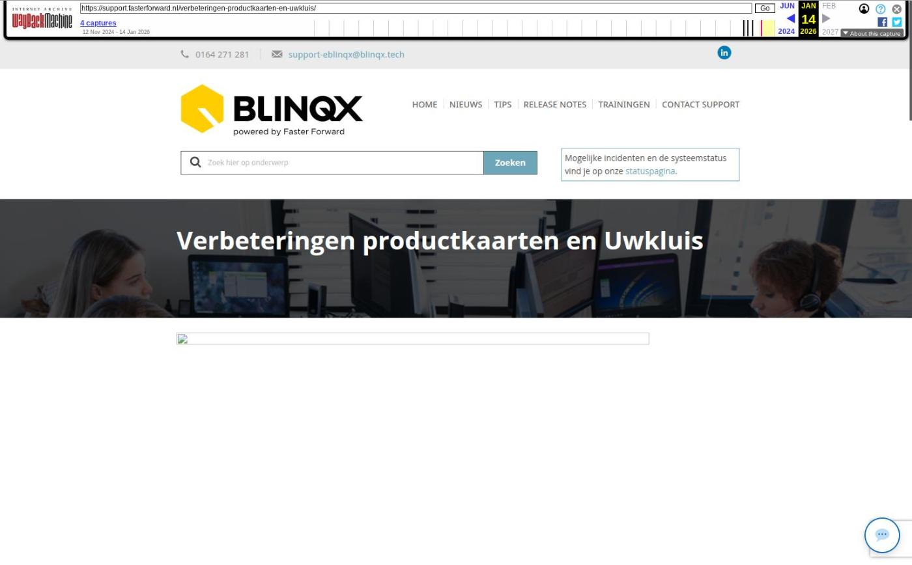

Verbeteringen productkaarten en Uwkluis

Tekstinhoud
Op woensdag 16 oktober zijn Elements en eBlinqx weer verbeterd en uitgebreid met nieuwe features. Deze release bevat onder andere verbeteringen op de productkaart en Uwkluis.
Blinqx
Conversietool verbeterd
Documenten automatisch censureren
Nieuwe look supportwebsite
Verbeteringen Uwkluis
Voortgang in het Engels getoond
Extra datumvelden dienst
Nieuwe branches volgens SIVI update
Overige verbeterpunten
Blinqx
We zijn volop bezig met de integratie van Blinqx. Er worden diverse stappen genomen hierin, waaronder het verbeteren van de conversietool, nieuwe features en het aanpassen van de supportwebsite.
Conversietool verbeterd
Wij hebben diverse verbeteringen voor onze interne conversietool doorgevoerd. Hierdoor wordt de doorstroom van de conversies verbeterd.
Documenten automatisch censureren
Door samenwerking met Hyarchis kunnen in eBlinqx documenten gemakkelijk automatisch gecensureerd worden. Dan hoef je dit niet meer handmatig met de PDF-bewerker te doen. Hier lees je er meer over. In deze koppeling zijn verbeteringen doorgevoerd. Zo wordt vanaf nu het originele geüploade document opgeslagen in het dossier onder het tabblad Documenten. Het gecensureerde document blijft gekoppeld aan het stuk. Ten tweede is het proces van handmatig automatisch censureren versneld, waardoor het gecensureerde document sneller klaar is. Let op: deze functionaliteit is alleen beschikbaar in eBlinqx.
Nieuwe look supportwebsite
De supportwebsite heeft een nieuw jasje gekregen. Zo hebben we een gezamenlijke look & feel. Ook hebben we alle artikelen aangepast naar eBlinqx.
Verbeteringen Uwkluis
Voortgang in het Engels getoond
In Uwkluis wordt de voortgang van het hypotheekproces weergegeven. Vanaf nu staat deze voortgang in het Engels wanneer er is gekozen voor de taal Engels.
Extra datumvelden dienst
Aan de productkaart van de dienst zijn de datumvelden 'Verzenddatum opdrachtbevestiging' en 'Ontvangstdatum getekende opdrachtbevestiging' toegevoegd. Zo kan je in de dienst terugzien op welke datum de opdracht tot dienstverlening is verzonden en getekend ontvangen is. De velden worden in combinatie met Uwkluis automatisch gevuld. Het veld 'Verzenddatum opdrachtbevestiging' wordt automatisch gevuld wanneer er een ondertekenverzoek voor UwKluis word gemaakt. Het veld 'Ontvangstdatum getekende opdrachtbevestiging' wordt gevuld en eventueel overschreven als het ondertekenverzoek daadwerkelijk getekend wordt. Dit geldt voor het ondertekenverzoek wat gekoppeld is aan de dienst. Je kunt de workflow laten reageren op deze velden. Stuur een e-mail naar opdrachten@fasterforward.nl om dit in te richten.
Nieuwe branches volgens SIVI update
SIVI heeft een veertigtal nieuwe branches geïntroduceerd. Deze zijn ook in eBlinqx en Elements toegevoegd met daarbij een passende productkaart.
Overige verbeterpunten
In de stukkenlijst zijn de kolommen 'Omschrijving' en 'Contract' omgewisseld. Daarnaast kan je op de omschrijving klikken, zodat je direct in het stuk komt
De gegevens die vanuit eBlinqx en Elements naar Portefeuillesignalen worden gesynchroniseerd zijn uitgebreid
In de rapportage Management – Geboekte provisie per pakket worden nu ook de boekingen op polissen die zijn opgenomen in de RC regeling getoond
Er zijn diverse API uitbreidingen doorgevoerd
Geplaatst op 14 oktober 2024
Laatste 5 releasenotes
Verbeteringen onder de motorkap en gespreksopnames »
HDN release: afscheid van HDN certificaten »
Verbeterde verwerking van grote e-mailvolumes via Office 365 en voorbereiding HDN »
Nu zelf schade- en levensverzekeringen omnummeren »
Verbeteringen onder de motorkap en type documenten gecontroleerd »